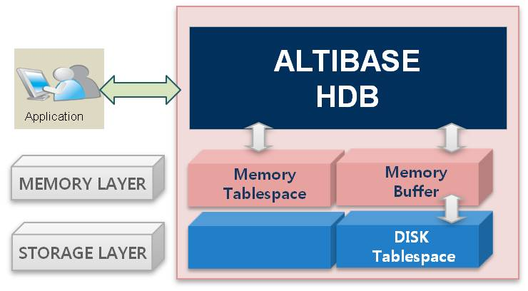

Introduction
Your organization's mission-critical applications need extremely fast transaction processing speeds to handle big data. Vast amounts of digital information makes it possible for you to do things that previously could not be done, as long as you have access to the data in real time. Managed well, big data provides insights into business trends, avoiding supply chain shortages, uncovering criminal activities, discovering medical breakthroughs, and many other emerging sources of economic value. Accessing and analyzing this data in real-time is no longer optional.
In today's fast paced business environment, operational efficiencies demand speed. Your customers, partners, suppliers and employees expect instantaneous response. Continuous access to real-time data is essential to gaining your competitive advantage. The future of your company, your department and your career depends upon fast, real-time access and analysis of high volumes of data in mission critical environments.
To meet the demands of today's modern IT environments, Altibase Corporation has taken an innovative approach by combining In-Memory(IMDB) and Disk Resident(DRDB) database concepts into a single, full-featured RDBMS, ALTIBASE HDB.

ALTIBASE HDB is a hybrid relational DBMS that delivers extremely high speed while supporting large data sets. ALTIBASE HDB reliably supports real-time applications and allows information managers to pick and choose between in-memory and on-disk data storage models.
With the in-memory database component of ALTIBASE HDB, the entire data resides in memory providing extreme performance, predictable response times, high throughput, and low latency without any disk I/O overhead and with no compromise from ACID (Atomicity, Consistency, Isolation, Durability) properties that are expected from an enterprise level database solution. ALTIBASE HDB In-Memory database is persistent and recoverable.
At the core of ALTIBASE HDB In-Memory database is the user memory tablespace which is used for managing mission-critical, frequently accessed hot data. The user memory tablespace allows database administrators to manage massive amounts of memory data efficiently and safely.
{kind=link}